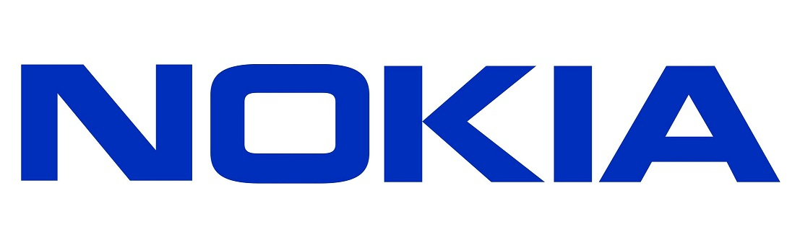
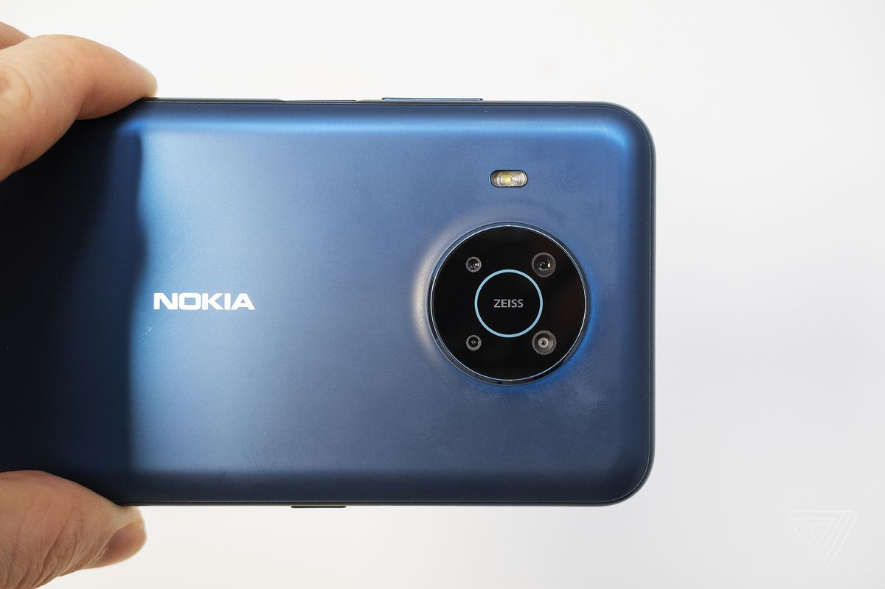
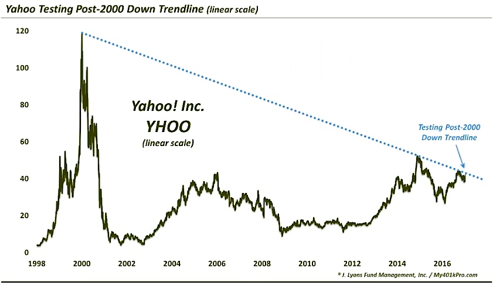
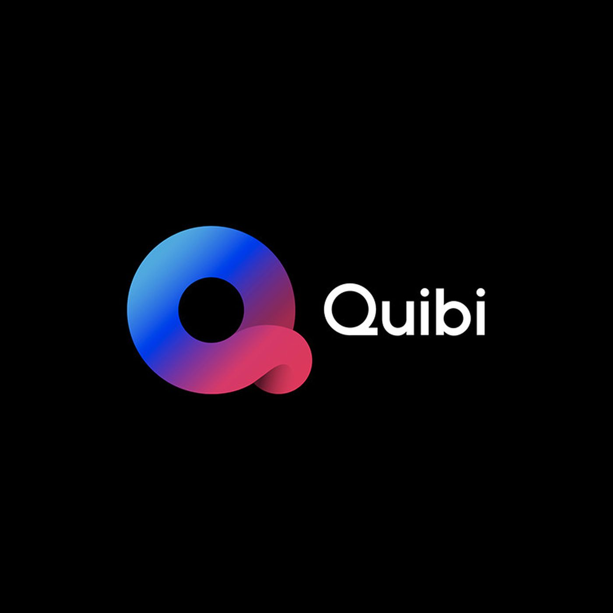

Failed Businesses
An Article By Matthew Pate
Oh this is going to be fun isn't it. For this article I've amassed 5 of what I would consider to be the worst business ventures of all time. These include all companies from those who slowly fell into obscurity once they were deemed obsolete, to those that were doomed to fail from the start.
5. Skype
I know at this point I'm beating a dead horse, but Skype's fall from grace was sudden and unexpected. The pandemic seemed to be Skype's time to shine, but a new challenger emerged from the darkness and stole Skype's Video Call Platform Crown (VCPC for short). This challenger of course being Zoom. But it seemed even then they couldn't get a break. Because as of July 31st, 2021, Skype was officially dead. It became Microsoft Teams, and despite the positive reviews and high usership, Skype was officially gone (technically it's still available for download of Windows 11, though I doubt it'll make much of a difference). Though Skype still definitely maintains some of it's relevance, it's been severely upstaged by Zoom in nearly every way possible, and I personally don't think Teams will ever reach the same heights. I mean they were right there at the finish line. People were using Skype as a verb! Do you think anybody will ever say "I have to Teams my boss this evening", no. It sounds absolutely ridiculous.
.png)
Shown here CEO of Skype Landon Bablandananovan having a mental breakdown
4. Nokia

Oh poor old Nokia. The inovators who refused to innovate. Nokia was huge when it first started making phones. They were the first to translate the giant awkward brick phone into a genuine fashion accessory, but I seems though that they didn't know how to evolve beyond that. When Apple and Android sarted focusing more on Software, Nokia sticked to improving hardware, without realizing that the people wanted better software. They were quickly dethroned by Apple and Adroid, and then they were bought by Microsoft (I'm noicing a pattern here). But it turns out, Nokia is so bad at making phones, that Microsoft gave up on using them, and just gets Apple and Android to make all ther phones anyways! Remember the Windows Phone? Yeah! Me neither! Seems like Micosoft also forgot about it! Nokia is fully 100% dead.

Nokia Phones: The phones you gte your kids when you don't want them to have a real phone!
3. Yahoo
Yahoo sucks. You know this, I know this, everyone knows this. Search for car and you'll get a scooter as a result. Microsoft (Yeah I know, these guys again) tried buying Yahoo on multiple occasions, their final offer being 44.6 billion dollars, and were denied each time. And Yahoo still failed. In this case, Microsoft actually could have saved them, or at least the fnding could've kept them alive. After denying the deal, Yahoo kept losing more and more space in the market and show no sign of improving whatsoever. And you know what's the real kicker? Early on, GOOGLE was offered to them by the original CEO's for 1 million dollars because they wanted to continue their studies, AND THEY REFUSED!

Shown here Yahoo's Stock Post 2000. Yikes.
2. Tumblr
Tumblr, like many other websites, wasn't even that hamless. Just a place to post bad memes, art, and other stuff. So naturally, it's innocence was darkened by the little goblins of the internet. Posting a lot of *ahem* sexual and pornography material relating to certain fetishes. Of course, when the uprising began, Tumblr couldn't do anything about it. The majority of their userbase were gross creeps, so naturally, advertisers wanted out. Tumblr started hemorraging advertisers all over the place, until they finally banned sexually explicit content on their site. Their only problem now, was that they had no more users! So the adverises didn't wanna go back anyways! What a glorious chain of screw ups.
Here shows an image of Tumblr before the Explicit Content Ban. This content was blurred for your safety.
1. Quibi

Oh yeah, I was saving the best for last. Quibi is another example of older people trying to capitilize off teenagers, and just not getting it. TikTok is huge, and the general demographic seems to be more on the younger side. So good ol' Jeffrey Katzenberg (That's right, the CEO of Dreamworks Animation) thought "What if we made short form content, like TikTok, except instead of making the thing the demographic we're tageting is interested in, let's make short mini-series that no one will watch.", so he did. And it sucked. He didn't understand that the appeal of TikTok was simply: Turn it on, watch a dumb 20 second video, and move on, and shows don't translate well ito that architype of content. TikTok is what people turn on when they get bored of the show they're watching, and they can't really do that when the show their watching is on their phone. Yeah that's right, Quibi made the interesting decision to make their app exclusively mobile, and furthermore, the contetn is shot to accomodate the small vertical screenspace of the phone. Nobody wants to pay for short random shows in a 2:4 aspect ratio on their phones. The idea was heavily flawed from the start, and the app crashed and burned literal months after it's release. The only reason I even know Quibi existed, was that in the last few weeks of it's short life, they doubled down on marketing and flooded Youtube with adds for shows that would've been better, if they were just. Made. NORMALLY!
There is no age gap as far as I can tell, nor is there a possibility of this ever failing - Jeffrey Katzenberg probably